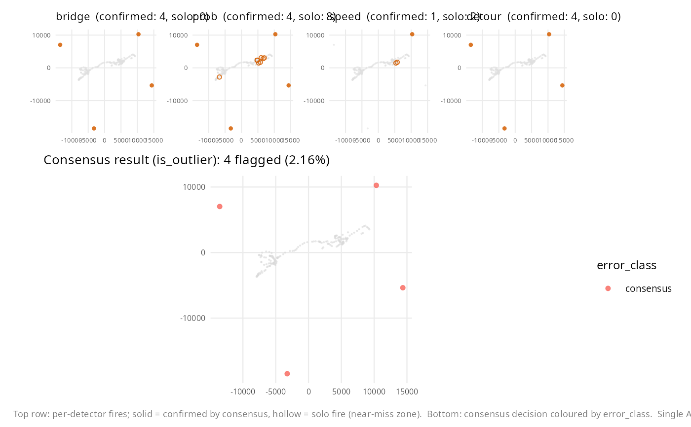

Per-detector flag audit for a cleaned move2 object
Source:R/mt_diagnose_flags.R
mt_diagnose_flags.RdReads the per-detector flag columns that mt_clean_track
(or any of the four primitives) attaches to its output, returns four
diagnostic tables plus a consensus-mode comparison, and a map
showing where each detector fired versus where the consensus rule
produced the final is_outlier decision. Use it to decide
whether the cascade is doing what you expect, and where to tune.
Arguments
- x
A
move2object with the per-detector flag columns thatmt_clean_trackor themt_flag_*primitives attach. Must contain at minimumis_outlier, plus a subset offlagged_by_bridge,flagged_by_prob,flagged_by_detour,flagged_by_speed.error_classis required for the bottom map panel and is produced bymt_clean_track.- print_tables
Logical. If
TRUE(default), print the four diagnostic tables plus the consensus-comparison table to the console. SetFALSEto silence the console output and work from the returned list.
Value
Invisibly, a list with components:
error_classFrequency table of
error_classamong flagged fixes.detector_firesData frame: for each detector column present, the count and percentage of flagged fixes that detector fired on.
co_fireTwo-way table of (n detectors fired) x (is_outlier) over all events.
near_missData frame: per detector, the number of fixes where it fired but
is_outlierstayedFALSE(consensus did not trip).consensus_comparisonData frame: under each built-in consensus mode (
"class_aware","strict","majority","speed_trusted","any"), how many fixes would be flagged, expressed in absolute counts and as a delta from the currentis_outliercolumn.mapA
patchworkobject combining the five map panels. Useprint(result$map)to draw it.
Details
The four tables answer four questions:
error_class – where in the cascade hierarchy do the flags land? A flag-heavy
kinematic_confluencebucket means the per-fix detectors are agreeing 2-of-3. A heavyblockbucket means block- expansion is doing the catching. A heavypoolbucket means cohortpool_byis supplying flags the per-track cascade missed.per-detector fires among flagged – who is doing the work? If one detector fires on >80\ fires on <20\ poorly to another.
co-fire histogram – how many detectors typically agree? Most flagged fixes should have 2 or more agreeing. Many one-detector fires that the consensus rejected means the loudest voice is being silenced.
near-miss zone – per detector, how many fixes fired but were NOT flagged because no other detector corroborated? A detector with thousands of near-misses is the candidate for either tighter thresholds (so other detectors catch up) or a looser consensus rule (so its verdict is accepted more often).
The consensus comparison re-applies the consensus rule
alone (no re-running the per-fix detectors) under each built-in
mode of mt_flag_consensus and reports how many
fixes each mode would flag. This is the cheap interactive piece:
switching consensus mode is post-hoc, so you see the cost of every
choice without paying the cascade's compute cost.
The map has five panels. Top row: four small panels, one
per detector, showing where that detector fired. Within each
panel, fires that survived the consensus are filled, fires that
did NOT survive (the near-miss zone) are hollow. Bottom row: one
large panel showing the kept trajectory plus the flagged fixes
coloured by error_class. All panels share one azimuthal-
equidistant projection centred on the object's centroid, so
across-detector visual comparison is honest.
Comparing diagnostics across pool_by configurations
The diagnostic is most informative when run on the same data
with different pool_by settings, to evaluate whether
cohort-level pooling is doing useful work or pushing the
cleaning past outlier-detection into within-animal behavioural
anomaly territory.
Pattern: re-run mt_clean_track with a narrower
pool_by (e.g. pool_by = "individual_id" instead of
pool_by = c("study_id", "individual_id")) and compare the
two diagnostic outputs. Three readings to look for:
Same total flag count and same per-detector fire pattern: the cohort distribution and the per-individual distribution agree; the pool_by choice is making no difference and either is fine.
Narrower pool_by flags more on some individuals: those animals have movement patterns narrower than the cohort. The extra flags may be real outliers the cohort distribution missed (in which case narrower is better) OR normal-for-this-animal behaviour that fell outside its own narrow distribution (in which case broader is better and the extra flags are false positives).
Broader pool_by flags more: the cohort has a heavier tail than the individuals (unusual; usually means a mix of distinct movement modes across animals). Cohort pooling is then aggregating the wrong thing; consider stratifying by movement type before pooling.
Visual check is decisive when narrower pooling flags more. Map the newly-flagged fixes; check their step speeds against the physiological cap. Speeds well below physiology + spatial position inside the kept cluster = within-animal behavioural variability, not outliers. Speeds near or above physiology + spatial isolation from the home-range bulk = real outliers the broader pooling missed.
On datasets where the cohort step-speed distribution is unimodal and the species shows a single dominant movement mode, cohort-level pooling is usually the principled outlier-detection choice. Narrower pooling crosses into behavioural-anomaly detection, which is a different operation than removing measurement errors.
See also
mt_clean_track for the orchestrator that
attaches the flag columns; mt_flag_consensus for
the post-hoc consensus rule the comparison column re-applies.
Examples
library(move2)
library(move2utils)
## a simulated track with known errors, shipped with the package
tracks <- mt_read(system.file("extdata/synthetic_tracks.csv.gz",
package = "move2utils"))
track <- filter_track_data(tracks, .track_id = "CPF_C")
cleaned <- mt_clean_track(track, plot = FALSE, remove = FALSE)
#> No physiological speed cap supplied -- running with a data-driven cap chosen from your track. This works well for most cases. If your animal has multiple behavioural states (e.g. perched and flying) or you expect sustained-spoof errors, supplying `v_max =` (a published top speed in m/s) or `(mass = ..., mode = ...)` for the allometric estimate gives sharper results. See `?v_phys_estimate` for the allometric helper; `?mt_clean_track` documents the failure modes of the auto-cap in detail.
#> Iter 1: bridge=4 prob=3 speed=0 detour=4 (v_max=-) | conjunction=3 | new=3 cumulative=3
#> Iter 2: bridge=1 prob=5 speed=3 detour=1 (v_max=2.5) | conjunction=1 | new=1 cumulative=4
#> Iter 3: bridge=0 prob=6 speed=0 detour=0 (v_max=-) | conjunction=0 | new=0 cumulative=4
#> === mt_clean_track: 4 flagged (2.162% of 185); stopped: no_new_flags ===
#> Returning all rows with flag columns attached. To drop flagged rows, either re-run with remove = TRUE (the default) or subset: x[!x$is_outlier, ].
diag <- mt_diagnose_flags(cleaned)
#>
#> === Flag audit ===
#> Events: 185 | flagged (current is_outlier): 4 (2.16%)
#>
#> -- 1. error_class breakdown (flagged only) --
#> error_class Freq
#> consensus 4
#>
#> -- 2. per-detector fires among flagged --
#> detector n_fires pct_of_flagged
#> flagged_by_bridge 4 100
#> flagged_by_prob 4 100
#> flagged_by_speed 1 25
#> flagged_by_detour 4 100
#>
#> -- 3. co-fire histogram (n detectors fired x is_outlier) --
#> n_detectors_fired is_outlier Freq
#> 0 FALSE 172
#> 1 FALSE 8
#> 2 FALSE 1
#> 3 FALSE 0
#> 4 FALSE 0
#> 0 TRUE 0
#> 1 TRUE 0
#> 2 TRUE 0
#> 3 TRUE 3
#> 4 TRUE 1
#>
#> -- 4. near-miss zone (fired but consensus did not trip) --
#> detector n_near_miss
#> flagged_by_bridge 0
#> flagged_by_prob 8
#> flagged_by_speed 2
#> flagged_by_detour 0
#>
#> -- 5. consensus mode comparison --
#> Re-applying each mode to existing flag columns;
#> no per-fix detectors are re-run.
#>
#> consensus_mode n_flagged pct_total delta_vs_current
#> class_aware 4 2.162 0
#> strict 4 2.162 0
#> majority 5 2.703 1
#> speed_trusted 6 3.243 2
#> any 13 7.027 9
print(diag$map)

diag$consensus_comparison
#> consensus_mode n_flagged pct_total delta_vs_current
#> 1 class_aware 4 2.162 0
#> 2 strict 4 2.162 0
#> 3 majority 5 2.703 1
#> 4 speed_trusted 6 3.243 2
#> 5 any 13 7.027 9